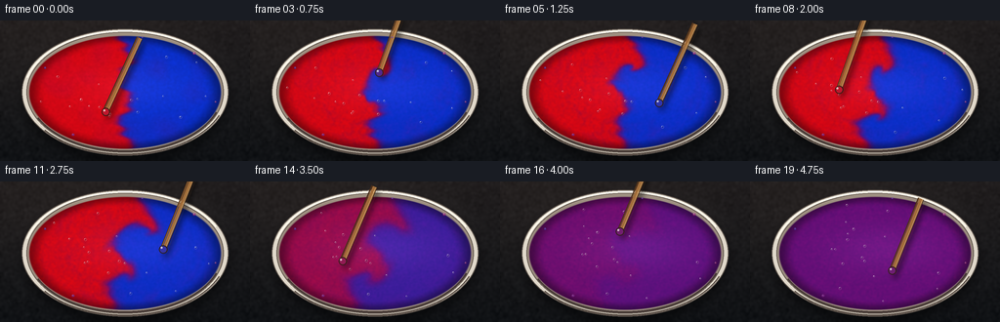
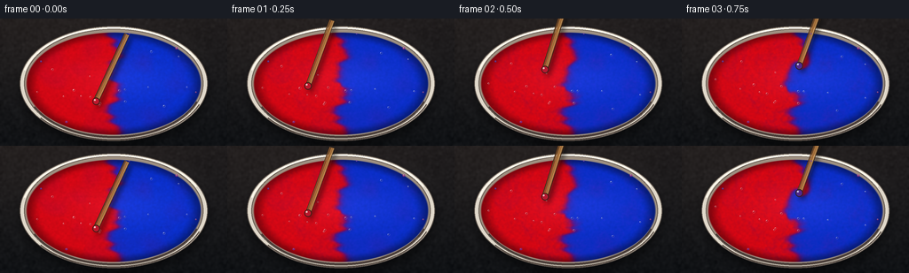
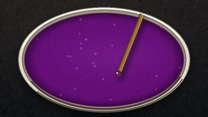
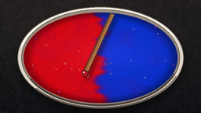
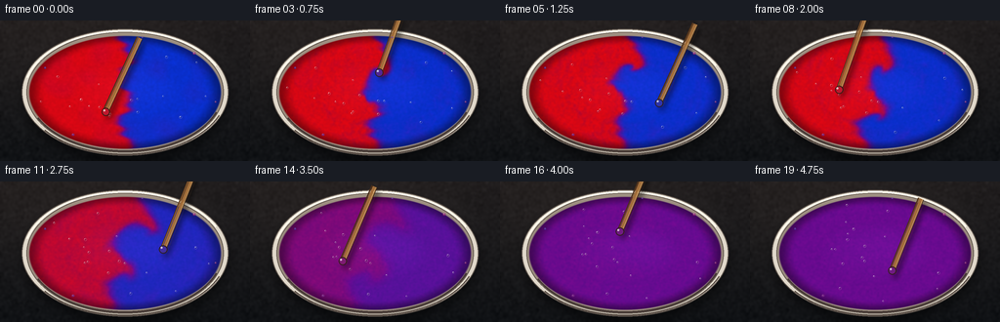
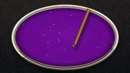

CODING AGENTS AS PIXEL WORLD MODELS
traex/DeepSeek-V4.1-Flash · phygen_121
点击播放 · 原生 RGB 像素
逐轮保存的候选
回放视频、检查图与代码变化。
每份候选均可单独播放。实际图片检查记录在下方工具轨迹中。
候选 01播放与检查图
点击播放 · 原生 RGB 像素

展开代码变化
--- 上一保存版本
+++ 本次保存版本
@@ -0,0 +1,465 @@
+from pathlib import Path
+
+import numpy as np
+from PIL import Image, ImageDraw, ImageFilter
+from scipy.ndimage import gaussian_filter, map_coordinates
+
+import artifact_io
+
+
+WIDTH = 256
+HEIGHT = 144
+FRAMES = 20
+FPS = 4.0
+SUPERSAMPLE = 3
+
+
+def smoothstep(edge0, edge1, values):
+ scaled = np.clip((values - edge0) / (edge1 - edge0), 0.0, 1.0)
+ return scaled * scaled * (3.0 - 2.0 * scaled)
+
+
+def unit(vector):
+ return vector / np.linalg.norm(vector)
+
+
+def bilinear(field, sample_x, sample_y):
+ return map_coordinates(
+ field,
+ np.stack((sample_y, sample_x)),
+ order=1,
+ mode="nearest",
+ prefilter=False,
+ )
+
+
+def paint_mixture(c, grain):
+ red = np.array([0.82, 0.025, 0.075], dtype=np.float32)
+ blue = np.array([0.035, 0.18, 0.78], dtype=np.float32)
+ purple = np.array([0.39, 0.055, 0.46], dtype=np.float32)
+ positive = np.clip(c, 0.0, 1.0) ** 0.82
+ negative = np.clip(-c, 0.0, 1.0) ** 0.82
+ color = (
+ purple[None, None, :]
+ + positive[..., None] * (red - purple)[None, None, :]
+ + negative[..., None] * (blue - purple)[None, None, :]
+ )
+ color *= (0.985 + 0.018 * grain)[..., None]
+ return color
+
+
+def flow_field(x, y, tip_x, tip_y, phase, center_x, center_y, paint_rx, paint_ry):
+ scale = float(SUPERSAMPLE)
+ dx = x - center_x
+ dy = y - center_y
+ radius = np.hypot(dx, dy) + 1.0
+
+ # A broad vessel-wide rotation keeps both pigments moving as one body.
+ global_strength = 2.6 * scale * (0.82 + 0.18 * np.sin(phase * 1.7))
+ u = -dy / radius * global_strength
+ v = dx / radius * global_strength
+
+ # The moving stirrer carries a strong local vortex.
+ lx = x - tip_x
+ ly = y - tip_y
+ local_radius = np.hypot(lx, ly) + 1.0
+ local_weight = np.exp(-((local_radius / (25.0 * scale)) ** 2))
+ local_strength = 12.0 * scale * (0.86 + 0.14 * np.cos(phase * 2.3))
+ u += -ly / local_radius * local_strength * local_weight
+ v += lx / local_radius * local_strength * local_weight
+
+ # A weaker counter-rotating cell folds the far side back into the center.
+ counter_x = center_x - 0.56 * (tip_x - center_x)
+ counter_y = center_y - 0.56 * (tip_y - center_y)
+ ox = x - counter_x
+ oy = y - counter_y
+ outer_radius = np.hypot(ox, oy) + 1.0
+ outer_weight = np.exp(-((outer_radius / (43.0 * scale)) ** 2))
+ outer_strength = 4.3 * scale * (0.9 + 0.1 * np.sin(phase * 1.25))
+ u += oy / outer_radius * outer_strength * outer_weight
+ v += -ox / outer_radius * outer_strength * outer_weight
+
+ # Gentle pressure waves around the stick make the pigment roll rather
+ # than merely rotate as a rigid disc.
+ pressure = 2.2 * scale * np.exp(-((local_radius / (34.0 * scale)) ** 2))
+ u += lx / local_radius * pressure
+ v += ly / local_radius * pressure
+
+ return u, v
+
+
+def render_background():
+ scale = SUPERSAMPLE
+ height = HEIGHT * scale
+ width = WIDTH * scale
+ yy, xx = np.mgrid[0:height, 0:width].astype(np.float32)
+ nx = xx / (width - 1)
+ ny = yy / (height - 1)
+ rng = np.random.default_rng(121)
+
+ top = np.array([42.0, 38.0, 39.0], dtype=np.float32)
+ bottom = np.array([20.0, 23.0, 27.0], dtype=np.float32)
+ base = top[None, None, :] * (1.0 - ny[..., None]) + bottom[None, None, :] * ny[..., None]
+ light = np.exp(-(((nx - 0.18) / 0.62) ** 2 + ((ny - 0.04) / 0.72) ** 2))
+ base += light[..., None] * np.array([7.0, 5.0, 3.0], dtype=np.float32)
+ vignette = np.clip(((nx - 0.5) ** 2 / 0.28 + (ny - 0.5) ** 2 / 0.30), 0.0, 1.0)
+ base *= (1.0 - 0.24 * vignette)[..., None]
+
+ grain = gaussian_filter(rng.normal(0.0, 1.0, (height, width)), sigma=1.1 * scale)
+ grain /= max(np.std(grain), 1e-6)
+ base += grain[..., None] * 1.8
+
+ image = Image.fromarray(np.clip(base, 0, 255).astype(np.uint8), "RGB").convert("RGBA")
+ center_x = 128.0 * scale
+ center_y = 73.5 * scale
+ outer_rx = 106.0 * scale
+ outer_ry = 65.0 * scale
+
+ shadow = Image.new("RGBA", image.size, (0, 0, 0, 0))
+ shadow_draw = ImageDraw.Draw(shadow)
+ shadow_draw.ellipse(
+ (
+ center_x - outer_rx - 1.0 * scale,
+ center_y - outer_ry + 4.0 * scale,
+ center_x + outer_rx + 1.0 * scale,
+ center_y + outer_ry + 8.0 * scale,
+ ),
+ fill=(0, 0, 0, 125),
+ )
+ shadow = shadow.filter(ImageFilter.GaussianBlur(5.0 * scale))
+ image = Image.alpha_composite(image, shadow)
+
+ draw = ImageDraw.Draw(image)
+ outer_box = (
+ center_x - outer_rx,
+ center_y - outer_ry,
+ center_x + outer_rx,
+ center_y + outer_ry,
+ )
+ draw.ellipse(outer_box, fill=(224, 216, 202, 255), outline=(87, 78, 71, 255), width=max(1, scale))
+
+ inner_rx = 101.0 * scale
+ inner_ry = 62.0 * scale
+ draw.ellipse(
+ (
+ center_x - inner_rx,
+ center_y - inner_ry,
+ center_x + inner_rx,
+ center_y + inner_ry,
+ ),
+ fill=(157, 143, 128, 255),
+ outline=(100, 89, 80, 255),
+ width=max(1, scale),
+ )
+
+ # Thin glaze highlights and the shadowed lower rim give the dish depth.
+ draw.arc(
+ (
+ center_x - outer_rx + 2.0 * scale,
+ center_y - outer_ry + 1.5 * scale,
+ center_x + outer_rx - 2.0 * scale,
+ center_y + outer_ry - 1.5 * scale,
+ ),
+ start=194,
+ end=334,
+ fill=(255, 251, 238, 205),
+ width=max(2, round(1.7 * scale)),
+ )
+ draw.arc(
+ (
+ center_x - outer_rx + 1.5 * scale,
+ center_y - outer_ry + 1.0 * scale,
+ center_x + outer_rx - 1.5 * scale,
+ center_y + outer_ry - 1.0 * scale,
+ ),
+ start=22,
+ end=142,
+ fill=(88, 76, 68, 175),
+ width=max(1, round(1.2 * scale)),
+ )
+ draw.arc(
+ (
+ center_x - inner_rx + 1.0 * scale,
+ center_y - inner_ry + 1.0 * scale,
+ center_x + inner_rx - 1.0 * scale,
+ center_y + inner_ry - 1.0 * scale,
+ ),
+ start=20,
+ end=154,
+ fill=(69, 56, 52, 185),
+ width=max(2, round(1.8 * scale)),
+ )
+
+ return np.asarray(image.convert("RGB"), dtype=np.float32)
+
+
+def add_bubbles(image, frame_index, paint_alpha, center_x, center_y, paint_rx, paint_ry):
+ scale = SUPERSAMPLE
+ rng = np.random.default_rng(404)
+ count = 18
+ base_angle = rng.uniform(0.0, 2.0 * np.pi, count)
+ base_radius = rng.uniform(0.15, 0.91, count)
+ sizes = rng.uniform(0.65, 1.55, count)
+ phase = rng.uniform(0.0, 2.0 * np.pi, count)
+
+ layer = Image.new("RGBA", image.size, (0, 0, 0, 0))
+ draw = ImageDraw.Draw(layer)
+ for index in range(count):
+ angle = base_angle[index] + 0.075 * frame_index + 0.035 * np.sin(frame_index * 0.55 + phase[index])
+ radius = base_radius[index] * (1.0 + 0.018 * np.sin(frame_index * 0.7 + phase[index]))
+ bx = center_x + paint_rx * radius * np.cos(angle)
+ by = center_y + paint_ry * radius * np.sin(angle)
+ px = int(np.clip(bx, 0, image.width - 1))
+ py = int(np.clip(by, 0, image.height - 1))
+ if paint_alpha[py, px] < 0.92:
+ continue
+ r = max(1.0, sizes[index] * scale)
+ alpha = int(68 + 34 * (0.5 + 0.5 * np.sin(frame_index * 0.8 + phase[index])))
+ draw.ellipse((bx - r, by - r, bx + r, by + r), fill=(32, 22, 43, 32), outline=(255, 240, 240, alpha), width=max(1, scale // 2))
+ highlight = max(0.5, r * 0.27)
+ draw.ellipse(
+ (bx - r * 0.42 - highlight, by - r * 0.42 - highlight, bx - r * 0.42 + highlight, by - r * 0.42 + highlight),
+ fill=(255, 255, 250, 175),
+ )
+ return Image.alpha_composite(image, layer)
+
+
+def add_stirrer(image, tip_x, tip_y, handle_x, handle_y, wet_color, phase):
+ scale = SUPERSAMPLE
+ shadow = Image.new("RGBA", image.size, (0, 0, 0, 0))
+ shadow_draw = ImageDraw.Draw(shadow)
+ offset_x = 3.2 * scale
+ offset_y = 4.3 * scale
+ shadow_draw.line(
+ (tip_x + offset_x, tip_y + offset_y, handle_x + offset_x, handle_y + offset_y),
+ fill=(0, 0, 0, 110),
+ width=round(7.0 * scale),
+ )
+ shadow_draw.ellipse(
+ (
+ tip_x - 4.0 * scale + offset_x,
+ tip_y - 4.0 * scale + offset_y,
+ tip_x + 4.0 * scale + offset_x,
+ tip_y + 4.0 * scale + offset_y,
+ ),
+ fill=(0, 0, 0, 90),
+ )
+ shadow = shadow.filter(ImageFilter.GaussianBlur(2.6 * scale))
+ image = Image.alpha_composite(image, shadow)
+
+ layer = Image.new("RGBA", image.size, (0, 0, 0, 0))
+ draw = ImageDraw.Draw(layer)
+ draw.line(
+ (tip_x, tip_y, handle_x, handle_y),
+ fill=(73, 45, 24, 255),
+ width=round(6.5 * scale),
+ )
+ draw.line(
+ (tip_x, tip_y, handle_x, handle_y),
+ fill=(161, 109, 58, 255),
+ width=round(4.7 * scale),
+ )
+
+ vx = handle_x - tip_x
+ vy = handle_y - tip_y
+ length = max(np.hypot(vx, vy), 1.0)
+ nx = -vy / length
+ ny = vx / length
+ highlight_x = 1.15 * scale
+ highlight_y = 0.5 * scale
+ draw.line(
+ (
+ tip_x + nx * highlight_x + highlight_y,
+ tip_y + ny * highlight_x + highlight_y,
+ handle_x + nx * highlight_x + highlight_y,
+ handle_y + ny * highlight_x + highlight_y,
+ ),
+ fill=(225, 174, 104, 195),
+ width=max(1, round(1.15 * scale)),
+ )
+ draw.line(
+ (
+ tip_x - nx * 1.5 * scale,
+ tip_y - ny * 1.5 * scale,
+ handle_x - nx * 1.5 * scale,
+ handle_y - ny * 1.5 * scale,
+ ),
+ fill=(91, 57, 31, 120),
+ width=max(1, round(0.7 * scale)),
+ )
+
+ # A narrow grain line keeps the handle from reading as a flat stripe.
+ grain_offset = 0.7 * scale
+ draw.line(
+ (
+ tip_x + nx * grain_offset + 3.0 * scale,
+ tip_y + ny * grain_offset + 3.0 * scale,
+ handle_x + nx * grain_offset + 3.0 * scale,
+ handle_y + ny * grain_offset + 3.0 * scale,
+ ),
+ fill=(118, 77, 40, 95),
+ width=max(1, round(0.45 * scale)),
+ )
+
+ tip_radius = 4.2 * scale
+ draw.ellipse(
+ (tip_x - tip_radius, tip_y - tip_radius, tip_x + tip_radius, tip_y + tip_radius),
+ fill=tuple(int(v * 255) for v in wet_color) + (255,),
+ outline=(48, 30, 22, 230),
+ width=max(1, scale),
+ )
+ shine = 1.0 * scale
+ draw.ellipse(
+ (tip_x - 1.6 * scale - shine, tip_y - 1.6 * scale - shine, tip_x - 1.6 * scale + shine, tip_y - 1.6 * scale + shine),
+ fill=(255, 248, 244, 185),
+ )
+ return Image.alpha_composite(image, layer)
+
+
+def add_rim_specks(image, center_x, center_y, paint_rx, paint_ry):
+ scale = SUPERSAMPLE
+ layer = Image.new("RGBA", image.size, (0, 0, 0, 0))
+ draw = ImageDraw.Draw(layer)
+ specks = [
+ (0.72, -0.69, 1.4, (152, 43, 122, 220)),
+ (-0.83, -0.43, 1.0, (70, 46, 150, 210)),
+ (0.94, 0.17, 0.9, (155, 52, 110, 200)),
+ (-0.54, 0.75, 1.2, (120, 40, 133, 215)),
+ (0.18, -0.97, 0.75, (91, 48, 153, 200)),
+ ]
+ for ux, uy, size, color in specks:
+ sx = center_x + ux * paint_rx
+ sy = center_y + uy * paint_ry
+ radius = size * scale
+ draw.ellipse((sx - radius, sy - radius, sx + radius, sy + radius), fill=color)
+ draw.ellipse(
+ (sx - radius * 0.45, sy - radius * 0.6, sx + radius * 0.15, sy - radius * 0.1),
+ fill=(255, 244, 241, 100),
+ )
+ return Image.alpha_composite(image, layer)
+
+
+def generate_frames():
+ scale = SUPERSAMPLE
+ height = HEIGHT * scale
+ width = WIDTH * scale
+ center_x = 128.0 * scale
+ center_y = 73.5 * scale
+ paint_rx = 98.5 * scale
+ paint_ry = 58.0 * scale
+
+ background = render_background()
+ yy, xx = np.mgrid[0:height, 0:width].astype(np.float32)
+ u = (xx - center_x) / paint_rx
+ v = (yy - center_y) / paint_ry
+ elliptical_distance = u * u + v * v
+ paint_alpha = 1.0 - smoothstep(0.972, 1.018, elliptical_distance)
+
+ rng = np.random.default_rng(121)
+ low_noise = gaussian_filter(rng.normal(0.0, 1.0, (height, width)), sigma=8.0 * scale)
+ low_noise /= max(np.std(low_noise), 1e-6)
+ fine_noise = gaussian_filter(rng.normal(0.0, 1.0, (height, width)), sigma=0.8 * scale)
+ fine_noise /= max(np.std(fine_noise), 1e-6)
+
+ edge = (
+ 0.060 * np.sin(2.6 * np.pi * v + 0.25)
+ + 0.026 * np.sin(6.8 * np.pi * v + 0.9)
+ + 0.014 * np.sin(12.0 * np.pi * v + 2.1)
+ )
+ c = np.tanh((edge - u) / 0.052)
+ c += 0.085 * low_noise
+ c = np.clip(c, -1.0, 1.0).astype(np.float32)
+
+ tip_positions = []
+ for frame_index in range(FRAMES):
+ time_seconds = frame_index / FPS
+ angle = 2.05 + 2.0 * np.pi * 0.60 * time_seconds
+ tip_x = center_x + 0.39 * paint_rx * np.cos(angle) + 0.020 * paint_rx * np.sin(2.2 * angle + 0.3)
+ tip_y = center_y + 0.37 * paint_ry * np.sin(angle) + 0.025 * paint_ry * np.cos(2.7 * angle)
+ tip_positions.append((tip_x, tip_y, angle))
+
+ frames = []
+ for frame_index, (tip_x, tip_y, angle) in enumerate(tip_positions):
+ if frame_index > 0:
+ previous_tip_x, previous_tip_y, previous_angle = tip_positions[frame_index - 1]
+ phase = previous_angle
+ sample_x = xx.copy()
+ sample_y = yy.copy()
+ substeps = 4
+ for _ in range(substeps):
+ u_flow, v_flow = flow_field(
+ sample_x,
+ sample_y,
+ tip_x,
+ tip_y,
+ phase,
+ center_x,
+ center_y,
+ paint_rx,
+ paint_ry,
+ )
+ sample_x -= u_flow / substeps
+ sample_y -= v_flow / substeps
+ c = bilinear(c, sample_x, sample_y)
+
+ mix_progress = smoothstep(10.0, 19.0, float(frame_index))
+ diffusion_sigma = (0.48 + 0.055 * frame_index + 2.1 * mix_progress) * scale
+ c = gaussian_filter(c, sigma=diffusion_sigma)
+ c *= 1.0 - 0.975 * mix_progress
+ c += (0.018 * (1.0 - 0.72 * mix_progress)) * fine_noise
+ c = np.clip(c, -1.0, 1.0)
+
+ color = paint_mixture(c, fine_noise)
+
+ height_field = 1.65 * gaussian_filter(c, sigma=1.5 * scale)
+ height_field += 0.14 * gaussian_filter(fine_noise, sigma=3.0 * scale)
+ gradient_y, gradient_x = np.gradient(height_field)
+ normal = np.stack(
+ (-1.7 * gradient_x, -1.7 * gradient_y, np.ones_like(c)),
+ axis=-1,
+ )
+ normal /= np.linalg.norm(normal, axis=-1, keepdims=True)
+ light = unit(np.array([-0.42, -0.55, 0.72], dtype=np.float32))
+ diffuse = np.clip(np.sum(normal * light[None, None, :], axis=-1), 0.0, 1.0)
+ reflected = 2.0 * diffuse[..., None] * normal - light[None, None, :]
+ specular = np.clip(reflected[..., 2], 0.0, 1.0) ** 28.0
+
+ edge_shadow = smoothstep(0.68, 1.0, elliptical_distance)
+ color *= (0.82 + 0.27 * diffuse)[..., None]
+ color *= (1.0 - 0.38 * edge_shadow)[..., None]
+ broad_sheen = np.exp(
+ -(
+ ((u - 0.10) / 0.62) ** 2
+ + ((v + 0.08) / 0.42) ** 2
+ )
+ )
+ color += broad_sheen[..., None] * np.array([0.055, 0.040, 0.065], dtype=np.float32)
+ color += specular[..., None] * np.array([0.42, 0.35, 0.40], dtype=np.float32)
+ color = np.clip(color, 0.0, 1.0)
+
+ frame = background * (1.0 - paint_alpha[..., None]) + color * 255.0 * paint_alpha[..., None]
+ image = Image.fromarray(np.clip(frame, 0, 255).astype(np.uint8), "RGB").convert("RGBA")
+ image = add_bubbles(image, frame_index, paint_alpha, center_x, center_y, paint_rx, paint_ry)
+
+ sample_c = bilinear(c, np.array([tip_x]), np.array([tip_y]))[0]
+ wet_color = np.clip(paint_mixture(np.array([[sample_c]], dtype=np.float32), np.array([[0.0]], dtype=np.float32))[0, 0], 0.0, 1.0)
+ wet_color = wet_color * 0.72 + np.array([0.16, 0.08, 0.12], dtype=np.float32)
+
+ handle_x = tip_x + (31.0 + 7.0 * np.sin(angle * 1.25)) * scale
+ handle_y = tip_y - (79.0 + 5.0 * np.cos(angle * 1.1)) * scale
+ image = add_stirrer(image, tip_x, tip_y, handle_x, handle_y, wet_color, angle)
+ image = add_rim_specks(image, center_x, center_y, paint_rx, paint_ry)
+ image = image.convert("RGB").resize((WIDTH, HEIGHT), Image.Resampling.LANCZOS)
+ frames.append(np.asarray(image, dtype=np.uint8))
+
+ return np.stack(frames, axis=0)
+
+
+def main():
+ case_dir = Path(__file__).resolve().parent
+ frames = generate_frames()
+ artifact_io.save(frames, case_dir)
+
+
+if __name__ == "__main__":
+ main()
候选 02播放与检查图
点击播放 · 原生 RGB 像素

展开代码变化
--- 上一保存版本
+++ 本次保存版本
@@ -36,7 +36,7 @@
def paint_mixture(c, grain):
red = np.array([0.82, 0.025, 0.075], dtype=np.float32)
blue = np.array([0.035, 0.18, 0.78], dtype=np.float32)
- purple = np.array([0.39, 0.055, 0.46], dtype=np.float32)
+ purple = np.array([0.40, 0.040, 0.55], dtype=np.float32)
positive = np.clip(c, 0.0, 1.0) ** 0.82
negative = np.clip(-c, 0.0, 1.0) ** 0.82
color = (
@@ -402,10 +402,10 @@
sample_y -= v_flow / substeps
c = bilinear(c, sample_x, sample_y)
- mix_progress = smoothstep(10.0, 19.0, float(frame_index))
- diffusion_sigma = (0.48 + 0.055 * frame_index + 2.1 * mix_progress) * scale
+ mix_progress = smoothstep(8.0, 19.0, float(frame_index))
+ diffusion_sigma = (0.48 + 0.060 * frame_index + 2.8 * mix_progress) * scale
c = gaussian_filter(c, sigma=diffusion_sigma)
- c *= 1.0 - 0.975 * mix_progress
+ c *= 1.0 - 0.992 * mix_progress
c += (0.018 * (1.0 - 0.72 * mix_progress)) * fine_noise
c = np.clip(c, -1.0, 1.0)
@@ -425,7 +425,7 @@
specular = np.clip(reflected[..., 2], 0.0, 1.0) ** 28.0
edge_shadow = smoothstep(0.68, 1.0, elliptical_distance)
- color *= (0.82 + 0.27 * diffuse)[..., None]
+ color *= (0.91 + 0.18 * diffuse)[..., None]
color *= (1.0 - 0.38 * edge_shadow)[..., None]
broad_sheen = np.exp(
-(
@@ -433,7 +433,8 @@
+ ((v + 0.08) / 0.42) ** 2
)
)
- color += broad_sheen[..., None] * np.array([0.055, 0.040, 0.065], dtype=np.float32)
+ broad_sheen *= smoothstep(0.40, 0.12, elliptical_distance)
+ color += broad_sheen[..., None] * np.array([0.026, 0.016, 0.038], dtype=np.float32)
color += specular[..., None] * np.array([0.42, 0.35, 0.40], dtype=np.float32)
color = np.clip(color, 0.0, 1.0)

可观测工具轨迹
实际执行的命令与返回图片。
命令 1exit 0
/bin/bash -c "pwd && rg --files -g 'prompt.txt' -g 'GENERATION_RULES.md' -g 'task_spec.json' -g '"'!**/.git/**'"'"
命令 2exit 0
/bin/bash -c 'ls -la'
命令 3exit 0
/bin/bash -c 'cat prompt.txt'
命令 4exit 0
/bin/bash -c 'cat GENERATION_RULES.md'
命令 5exit 0
/bin/bash -c 'cat task_spec.json'
命令 6exit 0
/bin/bash -c "sed -n '1,240p' artifact_io.py"
命令 7exit 0
/bin/bash -c "python - <<'PY'
import numpy, PIL
print('numpy', numpy.__version__)
print('PIL', PIL.__version__)
try:
import scipy
print('scipy', scipy.__version__)
except Exception as e: print('scipy unavailable', e)
PY"命令 8exit 0
/bin/bash -c 'python generate.py'
命令 9exit 0
/bin/bash -c 'python generate.py'
命令 10exit 0
/bin/bash -c "python - <<'PY'
from pathlib import Path
import json
import numpy as np
from PIL import Image
root=Path('.')
frames=sorted((root/'frames').glob('*.png'))
arr=np.load(root/'pixels.npz')['pixels']
print('frame_count', len(frames))
print('frame_sizes', sorted({Image.open(p).size for p in frames}))
print('pixels_shape', arr.shape, arr.dtype)
print('pixels_range', int(arr.min()), int(arr.max()))
print('npz_mb', round((root/'pixels.npz').stat().st_size/1024/1024, 2))
print('html_mb', round((root/'index.html').stat().st_size/1024/1024, 2))
print('required', {p.name: p.exists() for p in [root/'generate.py', root/'index.html', root/'inspection.png', root/'transition_check.png']})
PY"命令 11exit 0
/bin/bash -c 'git status --short'
视觉工具实际返回图片 1

视觉工具实际返回图片 2

视觉工具实际返回图片 3

视觉工具实际返回图片 4

视觉工具实际返回图片 5

视觉工具实际返回图片 6

保存候选 3 份；完成命令 11 次；可验证图片返回 6 张。原始 API 响应与完整日志保留在本地。